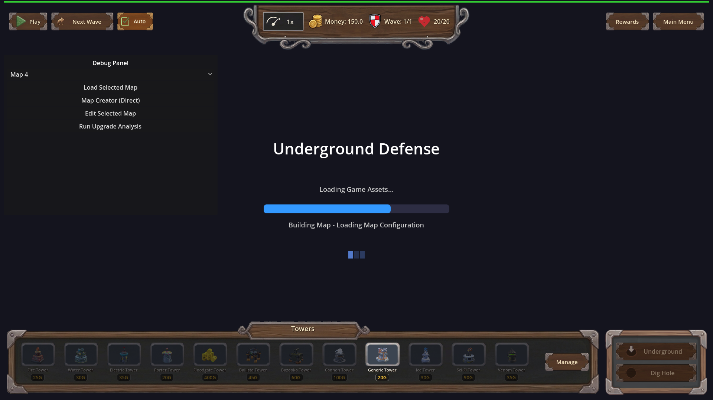
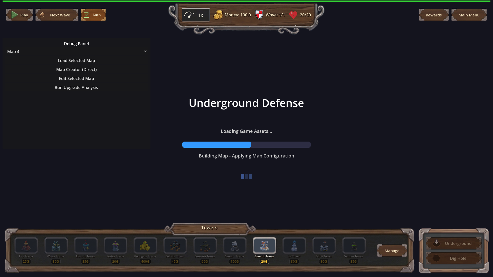

Manual Test Report – game-ready-blocks-map-load (issue #116) loading screen mid-world-build
Summary
- Result: PASSED
- Tested on: 2026-08-24, windowed Godot 4.4.1 (gl_compatibility / opengl3 / Dummy audio), software-GL worker
- Scenario: .gen/ui_scenario.md
- Tester: Manual-tester profile
Ran the windowed capture scene `res://tests/loading/capture_loading_screen_midbuild.tscn`
through run_project_cmd on the real-content tree. It instantiates the real MapLoadingScreen,
drives the phased world build, and saves PNGs mid-build. Three fresh PNGs were produced and
visually inspected: each shows a partially filled progress bar with a distinct build-phase
caption ("Building Map - Loading Map Configuration", "Building Map - Applying Map
Configuration", "Building Map - Building Terrain and Paths"), proving the bar advances in
steps and the caption changes during the world build.
Scenario Walkthrough
### Step 1 – Launch loading screen windowed (Beats 1–2)
- Action: Ran `godot --path . --rendering-method gl_compatibility --rendering-driver opengl3 --audio-driver Dummy res://tests/loading/capture_loading_screen_midbuild.tscn` via the project runner.
- Expected: Loading screen appears with partially filled bar and a "Building Map - <phase>" caption while world-build phases run.
- Observed: Exit 0. Runtime log shows `[MAP_BUILD]` phase lines completing during the driven load and three `[SHOT] saved ... bar=... caption=...` lines:
- shot 0: bar=68.35, caption="Building Map - Loading Map Configuration"
- shot 1: bar=53.57, caption="Building Map - Applying Map Configuration"
- shot 2: bar=57.14, caption="Building Map - Building Terrain and Paths"
- Status: PASS
### Step 2 – Inspect captured stills
- Action: Opened all three PNGs under `.gen/screenshots/` with the vision tool.
- Expected: Bar visibly not full, fill level differs between frames, caption text differs between frames.
- Observed: All shots show the "Underground Defense" loading screen with a blue-on-dark progress bar clearly less than 100%; the filled fraction differs across shots and the phase caption below the bar differs in every shot.
- Status: PASS
Criteria
- During the driven world-build portion of the load, the loading bar's fill advances through multiple distinct increments rather than jumping from pre-build value straight to complete.
-

-

-
(Measured bar values 68.35 → 53.57 → 57.14 across three saved frames — distinct increments, never 100%.)
- The status caption shown over the bar changes at least once during the world build instead of staying static until hand-over.
-
-
(Captions read "Building Map - Loading Map Configuration" → "Applying Map Configuration" → "Building Terrain and Paths".)
- Focus requirement (manual_testing.md): a windowed still mid-world-build showing a partially filled bar (past ~50%) with a build-phase caption.
-
Other plan criteria (import gate, focused driving test counts, harness results, frame budget, fallback behaviour) were re-verified headlessly by the r5 code worker (see `.gen/check_*.log`, `.gen/harness/map_build_phases/result.json`) and are out of scope for pixel evidence here; this report covers the player-visible loading-screen story.
Issues and Observations
- Low: The capture scene's shots land after hand-over has begun rendering the game HUD behind/around the loading overlay (tower bar and debug panel visible in the stills). The loading bar + caption remain clearly readable, so the evidence stands, but a cleaner capture could hide gameplay HUD.
- Low: Pre-existing invalid-UID warnings for HudTheme.tres / UI.tscn appear in output; accepted per plan.
- No errors blocking the visual claim: no Parse Error, no SCRIPT ERROR, no Failed loading resource in this run's output.
Recommendation
The player-visible loading-screen behavior (advancing bar + changing build-phase captions) is proven with real windowed pixels on the real-content build. Ready from the manual-testing perspective.